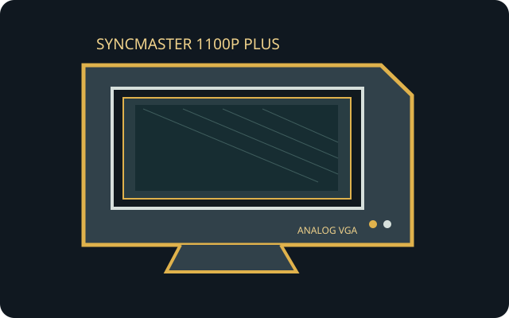

[ INDIVIDUAL COMPONENT // SAMSUNG ]
Samsung SyncMaster 1100P Plus
A 21-inch DynaFlat multiscan desktop CRT with a fine-pitch shadow-mask tube and analog PC input.

IDENTIFICATION: Use the complete 1100P Plus model text and regional suffix from the rear label. CRT output has no fixed native pixel grid; use a timing listed for this exact model.
Model specifications
| Exact model / image | Samsung SyncMaster 1100P Plus; 21-inch nominal DynaFlat CRT with approximately 20-inch viewable area, 4:3. |
|---|---|
| Dot pitch | 0.25 mm shadow-mask pitch (some broad listings combine specifications from related 1100P variants; verify exact suffix). |
| Resolution and refresh | No fixed native resolution. Common recommended mode: 1600 × 1200 at 75 Hz; maximum mode up to 2048 × 1536 at 60 Hz. Horizontal scan range 30–110 kHz and vertical 50–160 Hz; consult the model timing chart before selecting another mode. |
| Connectors | HD15 / DE-15 analog VGA RGB input and IEC AC mains inlet; this record covers the Plus model, not the related SyncMaster 1100P option variants. |
| Power | 100–240 V AC, 50/60 Hz; rated operating consumption approximately 130 W. Check rear nameplate and use a grounded, correctly rated cord. |
| Host compatibility | Works with analog VGA RGB outputs at a supported scan timing. A digital-only host needs an active HDMI/DisplayPort-to-VGA converter, not a passive adapter. |
Compatibility and safety notes
The monitor is not a USB-C, DVI-D, HDMI or DisplayPort display. Select a supported progressive scan mode and verify that any converter preserves the required analog RGB and sync. The cabinet is heavy; CRT high voltage can remain hazardous after disconnection. Do not open or attempt internal repairs without qualified CRT-service training.
Manuals and sources
- Samsung SyncMaster 1100P Plus Owner's InstructionsModel manual archive for installation, supported modes and safety.
- MobileSpecs — SyncMaster 1100P Plus specificationsSecondary model listing; distinguish Plus-specific values from the 1100P family.